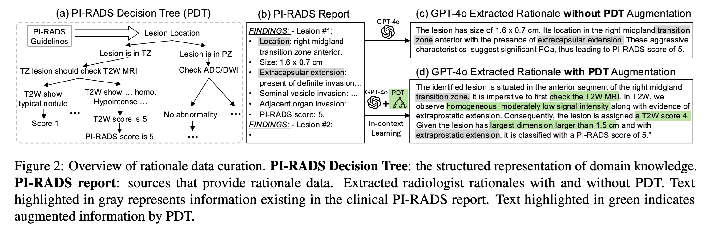
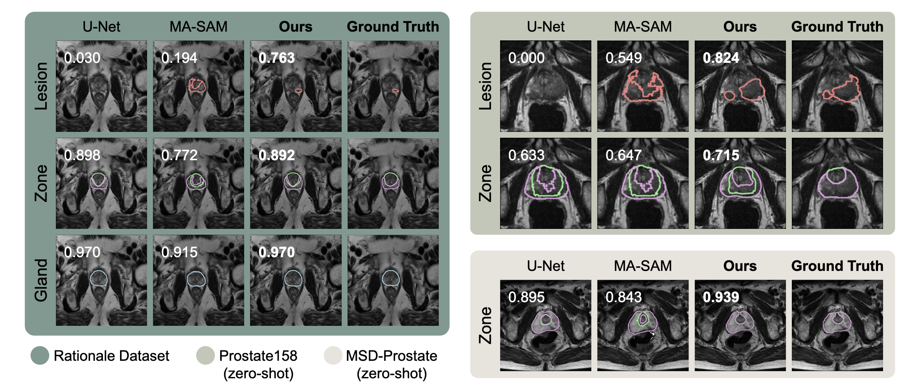
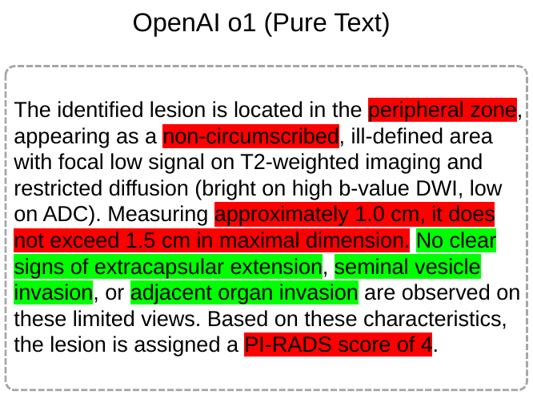
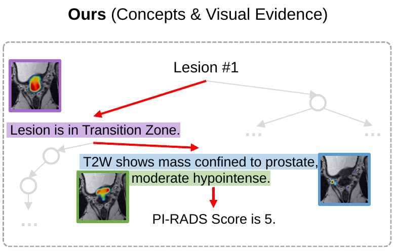
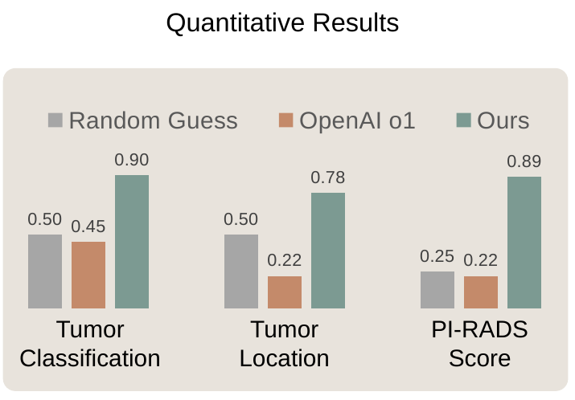
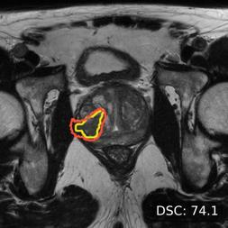
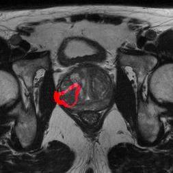

Research outcomes
Publications
Prostate MRI research
-
ECCV 2026European Conference on Computer Vision
Medical AI Encodes a “Feeling of Error”: Verifying Cancer Segmentation via Internal Concepts
-
ICML 2025International Conference on Machine Learning
“Why Is There a Tumor?”: Tell Me the Reason, Show Me the Evidence
Related research
-
ECCV 2026Oral AwardEuropean Conference on Computer Vision
“World Knowledge” in the Weights: Reading Concept Circuits of Vision Transformers
-
ICML 2026International Conference on Machine Learning
-
NeurIPS 2024Conference on Neural Information Processing Systems
Beyond Accuracy: Ensuring Correct Predictions With Correct Rationales
-
ECCV 2024Strong Double Blind AwardEuropean Conference on Computer Vision
DEAL: Disentangle and Localize Concept-level Explanations for VLMs
Data
- Prostate MRI rationale dataset: 180,000 image–mask–rationale examples for research on segmentation and clinical explanations, including rationale paraphrases. Dataset
Software
- MedRationale provides training and evaluation code for ProstateVLM. GitHub repository
- CancerSegFailure contains the project materials for our run-time failure-detection tool. Project repository · Paper
Abstract
This project studies how radiologists’ expertise can support safer, more accurate AI-assisted prostate MRI interpretation. Our main contribution is a rationale dataset that pairs MRI images and segmentation masks with clinical explanations derived from radiologists’ reports and PI-RADS guidance. It contains 180,000 image–mask–rationale examples, including language augmentation, and its rationale quality has been evaluated by expert radiologists. Building on this resource, we developed ProstateVLM to segment the prostate and explain its findings with localized image evidence. We also developed a tool for run-time failure detection. Our studies report improvements in segmentation on unseen datasets, image-grounded explanations, and failure detection. The papers, data preparation instructions, and software are listed above.
What is prostate MRI interpretation?
Radiologists examine prostate MRI to identify suspicious regions and describe their location, appearance, and extent. The Prostate Imaging Reporting and Data System (PI-RADS) provides a shared vocabulary for communicating these findings.
Our project brings this expertise into AI through two complementary forms of annotation: segmentation masks that mark regions in an image, and clinical rationales that explain the findings. We study the prostate gland, its anatomical zones, and lesions.
Why integrate radiologist insights?
An AI-generated mask can show where a model predicts a lesion without explaining why the region is suspicious. A written explanation can describe a finding without showing which part of the image supports it. Both the prediction and its supporting evidence need to be available for examination.
The project investigates whether learning from radiologists’ reports alongside image annotations can improve segmentation and produce explanations grounded in clinical concepts. The rationale dataset, ProstateVLM, and failure-detection tool address these goals. Their results support further research toward AI assistance that radiologists can understand and verify; clinical benefit remains to be evaluated.
Prostate MRI rationale dataset
The dataset pairs MRI images with segmentation masks and clinical explanations (ICML 2025). We annotated public MRI data with radiologist-written PI-RADS reports, then converted these reports into rationales guided by PI-RADS.
Building the rationale dataset

Large-scale: 1.6K public MRIs, 500 PI-RADS reports, 180K image-mask-rationale triples
Detailed Rationale: Radiologists’ step-by-step reasoning
Scalable: Automated rationale extraction
Expert evaluation of rationale quality
Two expert radiologists each reviewed the extracted rationales across four quality criteria.
| Criterion | Rating distribution | Positive ratings |
|---|---|---|
| 68% | ||
| 72% | ||
| 83% | ||
| 75% |
ProstateVLM
Building on this dataset, ProstateVLM produces lesion, zone, and gland segmentations while connecting its predictions to clinical concepts and supporting image regions (ICML 2025). Training and evaluation code is available.
Segmentation results
On unseen Prostate158 data, ProstateVLM achieved 42.6% lesion Dice, compared with 38.3% for ITUNet, the strongest reported baseline, without fine-tuning on this dataset. The examples below show its segmentations alongside other models and the reference annotations.

Explanations linked to image evidence
ProstateVLM pairs clinical explanations with supporting image regions. In a comparison on 20 selected MRI scans, it achieved higher accuracy than OpenAI o1 for tumor classification, tumor location, and PI-RADS scoring, while also providing localized visual evidence. The comparison below shows the textual and image-grounded explanations alongside the quantitative results.



A tool for run-time failure detection
To help radiologists assess the reliability of ProstateVLM’s predictions, we developed a complementary run-time failure-detection tool (ECCV 2026). For each new scan, it analyzes the segmentation model’s internal signals to produce a failure score and highlight potentially incorrect regions for review, without requiring a reference mask.
Localizing a potential error


Detection on unseen data
Trained on PI-CAI, the detector was evaluated on Prostate158 without fine-tuning.
On unseen Prostate158 data, output confidence (entropy) achieved 53.1% AUROC and our failure-detection tool achieved 73.6%, an improvement of 20.5 percentage points over the strongest reported confidence baseline. A curved arrow highlights the increase from 53.1% to 73.6%. Both bars start at zero on a 0–100% axis; dashed markers indicate chance at 50%.
AUROC measures how well failures are separated from successful predictions. Higher is better; 50% is chance.
Acknowledgments
This research is supported by the National Institutes of Health / National Cancer Institute through R21 CA301093, with collaborators at the University of Virginia and Memorial Sloan Kettering Cancer Center.